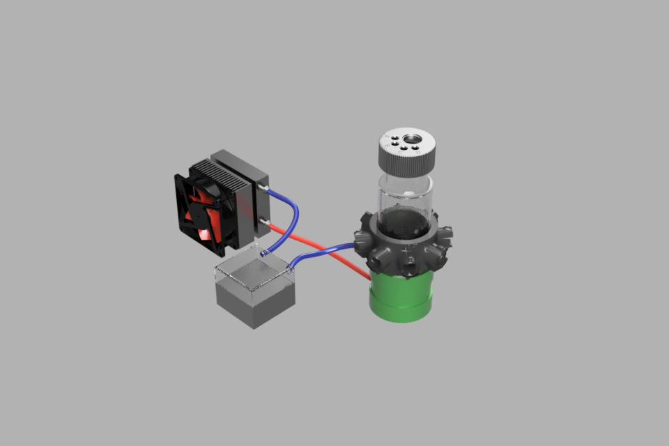
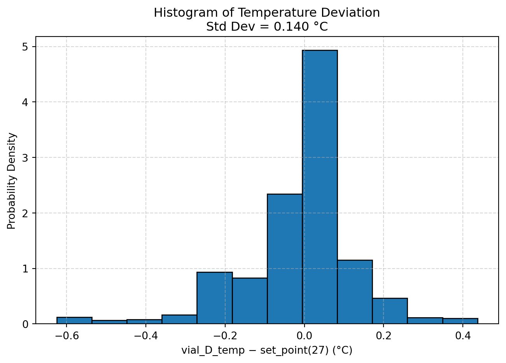

This note outlines the build of our second generation bioreactor. This version of the bioreactor includes Temperature Control and a Pump System for exchanging media. It can be run as a batch reaction with the pumps tuned off, or as a Turbidostat or a Chemostat. This is not a sealed system as in Bioreactor_v1 so there are no pressure measurements for this system.
Introduction
The second generation bioreactor was designed to enable continuous culturing of microbes. Continuous culture refers to growth with very frequent small dilutions and removal of old media and cells. This is in contrast to “batch culture” where a liquid broth is grown from a small number of cells to a high density, and then diluted all at once, usually by transferring a small volume of the dense culture to another large volume of fresh media. There are different ways in which continuous cultures are realized. The main challenge is setting the dilution rate such that the culture is always growing exponentially, without getting diluted to extinction or growing too dense for the measurement device. This is can be done in a variety of ways, but two common methods are chemostat operation and turbidostat operation. Conceptually, the turbidostat is easiest to understand. In this mode, there is direct feedback from a cultures optical density to the dilution. One simple tragedy is to activate dilution when the OD is above a set-point until OD is brought to the set-point. Another strategy is to adjust the dilution rate in proportion to the difference from the setpoint with a feedback controller, such as a proportional integral differential (PID) controller. Another method we have implemented is based on state space prediction using a Kalman filter, which dilutes below the set point and allows the culture to regrow up to the setpoint in order to provide more accurate estimates of the growth rate [1]. The chemostat was originally introduced b Novick and Szilard in 1950 [2]. A chemostat uses a liquid medium that has a single limiting nutrient that controls te growth rate, which is then set by the dilution rate \(D\) where the doubling time \(t_d\) is given by \[ \large t_d = \frac{ln 2}{D}\]
The chemostat is designed so that the parameters of the culture (like growth rate, optical density, cell number, pH, etc) remain constant.
Motor cooling jacket repurposed as vial water bath
Originally this was designed to distribute the flow in parallel, but pressure differential issues resulted in uneven flows tot eh four reactors, so instead they are run in series. This means that heat loss results in a gradient of temperatures from vial A (nearest to outflow) to vial D (farthest from outflow), but ths gradient is measured and recorded. The current provided to the Peltier element is controlled by a Cytron MD20A motor controller via a PWM signal from the Raspberry Pi. The current passing through the peltier element is recorded by an INA219 chip via I2C with Qwiic connectors. The inline flow temperatures are converted to voltages using a simple 10kOhm voltage divider circuit an read into the Pi via one of the free ADC ports on one of the 2 ADS7830 analog to digital converters.

Schematic of the PC Water-cooling based temperature controller
Pump System
The pump system consists of 8 stepper motor controlled peristaltic pumps, a fresh media feed pump and a waste removal pump for each of the 4 bioreactor vials. The pumps are powered by a dedicated 6A power supply and connected through a USB hub to Pololu Tic stepper motor controllers. The pumps are connected by luer lock adapters to stainless steel syringe needles in custom 3D printed caps. Pumps are connected to media feed bottle using these custom printed lids with the 14 inch tubing option.
Optical Density System
We used the design from 3D printed LED holder we developed for the updated Bioreactor v1, as well as the same transimpedance amplifier circuit. This comprises 12 voltage measurements that are read into 12/16 ports of a pair of ADS7830 ADCs. The 3D printed LED holder sleeve is shown in black in the schematic diagram.
Stirring and Illumination
The stirring and illumination system is also copied form our v1 Bioreactor design, using PC fans with attached magnets and 8 element Neopixel ring lights for programmable RGB illumination from below.
Control and Software
Codebase
The full BioreactorV2 codebase can e found in here. Data from experiments is written into the bioreactor_data directory and pushed as commits. The code creates a Bioreactor class to manage all sensors and operations for the bioreactor. The class initializes the ADCs, the infrared LEDs, the stirrers, the ring lights, the temperature sensors, the peltier controller, the peltier current monitor, the pumps and a set of relays on startup. A new datafile is initialized with the current date and time and stored int he bioreactor_data directory. Threading is used to start separate jobs that may have different update cycles, for example, the PID temperature control might update every second, while the sensor measurements may update every 5 seconds, and the pumps every 60 seconds. This is controlled by creating and starting jobs, see new_chemostat for an example.
Chemostat Mode
Chemostat operation relies on matched inflow and outflow to ensure that the culture volume does not drift overtime. Despite extensive calibration efforts, the pump tolerances were not sufficient to maintain volumes over the extended run times. In order to overcome this, outflow ports were placed at a fixed height so that liquid levels could not fall below this line. In addition, outflow was set to 1.1x the inflow rate. In the codebase, the compensate_flow method carries out this program. The balanced_flow method is retained in the case that a more accurate pump system is designed in future. Another option would be to included a serially connected scale for each bioreactor and feedback the flow levels on the actual vial mass.
Turbidostat Mode
We implemented a turbidostat mode based on the Extended Kalman filter design of Holffmann and colleagues [1]. Thius works by online estimation of a hidden state space of the culture which contains both estimates of its current OD and its growth rate. * State variables: The EKF tracks two hidden states:
Optical density (OD) of the culture.
Growth rate (r), expressed as a geometric growth factor per time step.
Dynamic model: They assume discrete exponential growth between measurements: [ OD_{k+1} = OD_k r_k] and [ r_{k+1} = r_k,] meaning OD changes multiplicatively with growth, while the growth rate is treated as constant between steps but can be updated when new information arrives.
Recursive estimation: At every second, the EKF predicts the next OD and growth rate, then updates those predictions using the noisy optical density measurement. The Kalman gain balances trust between the model prediction and new data, depending on their variances.
Dilution events: Since pump events cause sudden drops in OD, the filter assigns a high uncertainty to OD estimates during and immediately after dilution. This lets the OD quickly reconverge to the true density, while the growth rate estimate remains stable because its covariance is not reset. As a result, growth rate estimates survive dilution disturbances and retain continuity.
The code assciated with the implemenation of this mode can be found in the turbidostat_od_controller method and ExtendedKalmanFilter object method in src/utils in Bioreactor_v2.
Calibration and Testing
Temperature Control
Tempoerature control data can be pulled directly from the GitHub repository and plotted in-line with Quarto and Python. Here we show the temperature difference
Code
import pandas as pdimport matplotlib.pyplot as plt# If file is local (after downloading from GitHub)# df = pd.read_csv("20250901_131355_bioreactor_data.csv")# Or load directly from GitHub raw link (requires internet access)url = ("https://raw.githubusercontent.com/livingphysics/Bioreactor_v2/refs/heads/main/bioreactor_data/20250901_131355_bioreactor_data.csv")df = pd.read_csv(url)df = df.iloc[2000:]# Compute differencedf['temp_diff'] = df['vial_D_temp'] -27data = df['vial_D_temp'] -27data = data.dropna()std_dev = data.std()# Plot histogramplt.figure(figsize=(8, 5))plt.hist(df['temp_diff'].dropna(), bins=12, density=True, edgecolor='black')plt.xlabel('vial_D_temp − set_point(27) (°C)')plt.ylabel('Probability Density')plt.title(f'Histogram of Temperature Deviation\nStd Dev = {std_dev:.3f} °C')plt.grid(True, linestyle='--', alpha=0.5)plt.show()

Pump Calibration
Pump calibration was carried out by measuring flow rates using an RS232 connected digital scale from Kern with a 0.001g resolution. Data was read using the pyserial function in Python. Calibration is done by running each pump at a defined step rate for a fixed time, weighing the water before and after with the connected scale, and converting the change in mass (grams) to volume. The software repeats this several times, records the step rate, run duration, and measured flow rate (ml/s) into a CSV file, and then uses linear regression and plotting utilities to build a calibration curve that maps step rates to actual flow rates for each pump and direction.
Temperature Controller
[1]
S. A. Hoffmann, C. Wohltat, K. M. Müller, and K. M. Arndt, A User-Friendly, Low-Cost Turbidostat with Versatile Growth Rate Estimation Based on an Extended Kalman Filter, PLoS One 12, e0181923 (2017).
[2]
A. Novick and L. Szilard, Description of the Chemostat, Science 112, 715 (1950).